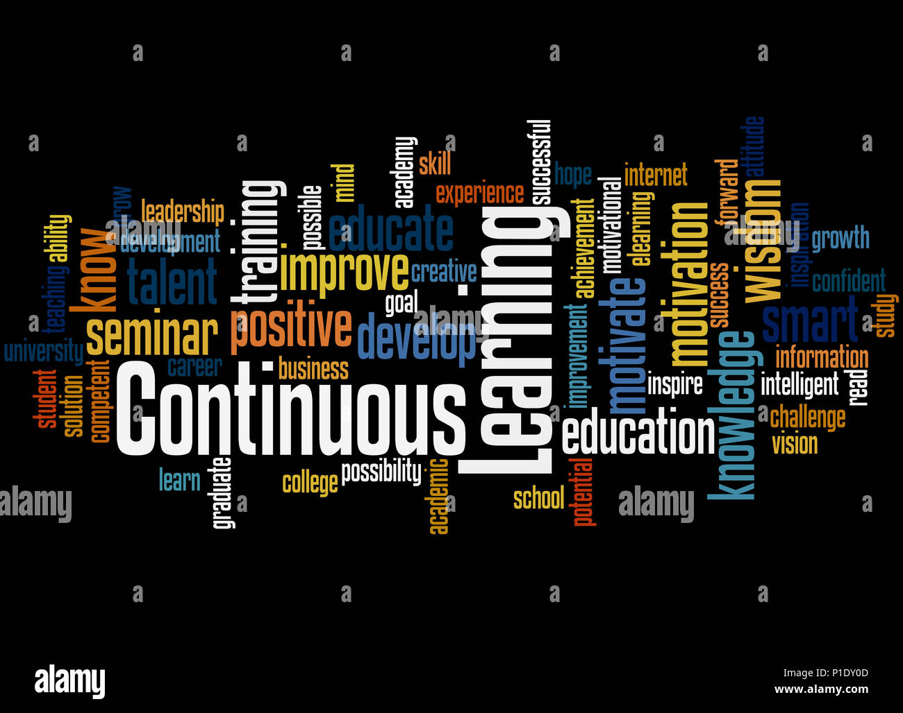

Hi. I'm Oluwatomisin Adeloye.
Transforming Customer Service Passion into Cybersecurity Proficiency.
MY JOURNEYTransforming Customer Service Passion into Cybersecurity Proficiency.
MY JOURNEYIn today's fast-paced digital landscape, cybersecurity is not just a necessity but a cornerstone of success. Allow me to introduce myself as your next invaluable asset in fortifying your organization's digital defenses. With a rich background in customer-facing roles, meticulous administration, and facilitating knowledge sharimg sessions, I bring a unique blend of skills to the table. Equipped with a Master's degree in Cybersecurity Technology, I am adept at crafting and implementing policies, delivering compelling presentations, fostering seamless collaboration, and leading sub-groups to success. My hands-on experience extends to conducting audits with precision according to ISO 27001 and NIST standards, ensuring your organization adheres to the highest cybersecurity standards. I am not just passionate about IT/cybersecurity; I am dedicated to empowering clients with the knowledge and tools needed to stay ahead of evolving threats. As I embark on the next phase of my career journey as an Information Security Specialist, I am eager to bring my expertise to your esteemed organization. Together, we can elevate your IT/Cybersecurity strategy to new heights, ensuring the organization thrives in today's digital landscape. I am ready to hit the ground running and make an immediate impact. Let's collaborate and pave the way to a safer, more secure future for your organization. .
CompTIA A+ 220-1101 & 1102
MSc Cybersecurity Technology GRC Academy- Cybarik Limited (ISC)2 Certified in Cybersecurity (CC) OneTrust -GRC Professional ISO 27001 Lead Auditor - The Knowledge AcademyISO 27001 Framework.
Do not be left unguarded.

Ornare nulla proin odio consequat.

Ornare nulla proin odio consequat.

Ornare nulla proin odio consequat.

Ornare nulla proin odio consequat.